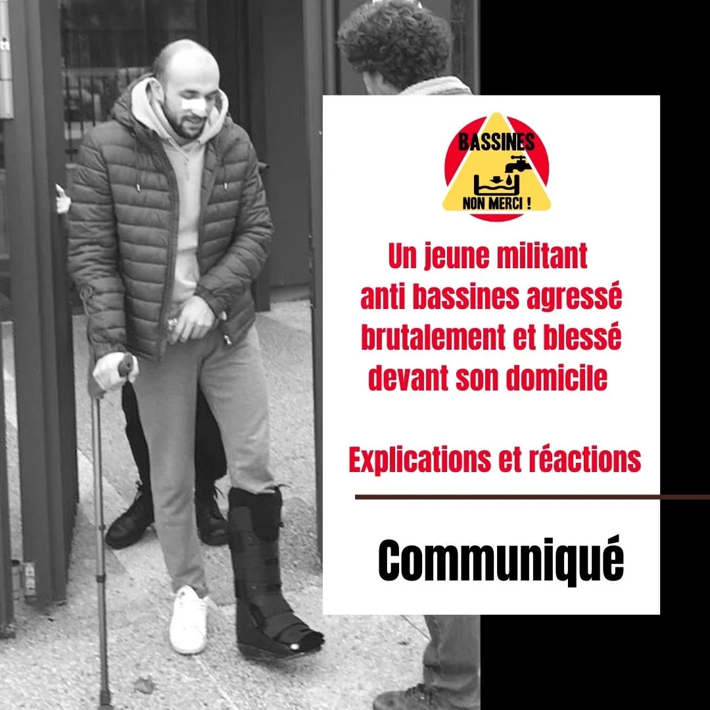
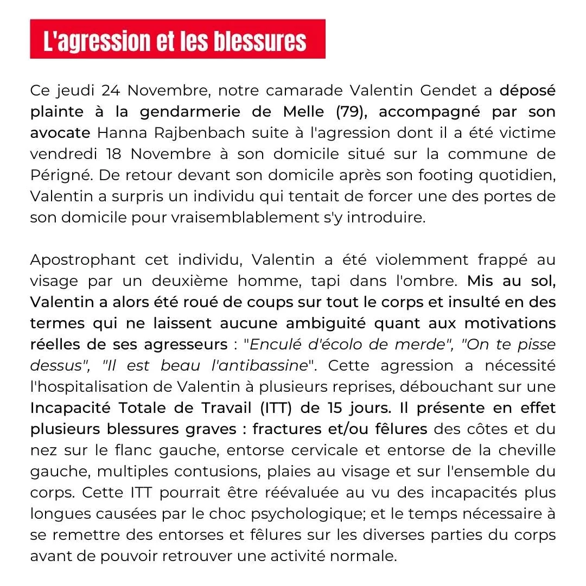
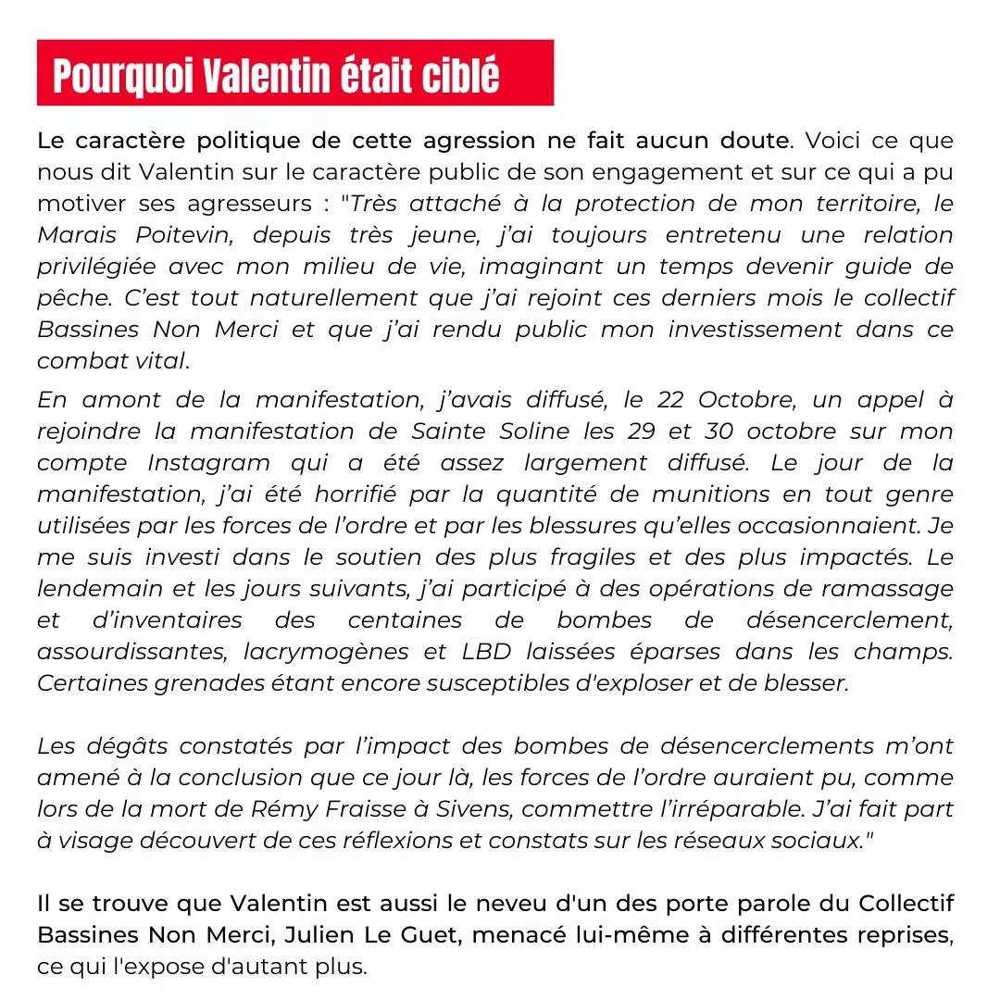
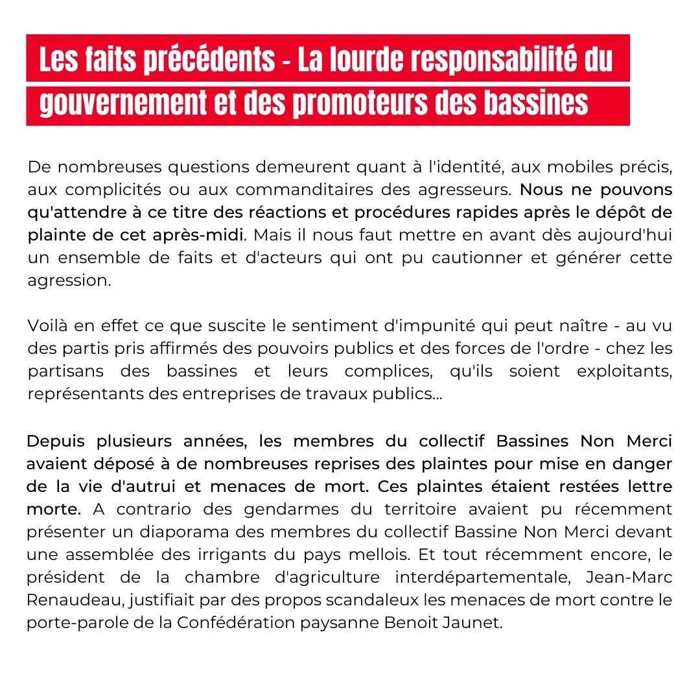
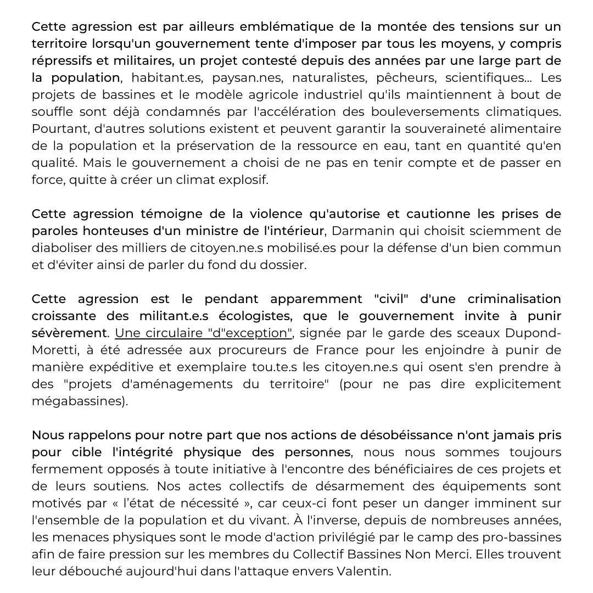
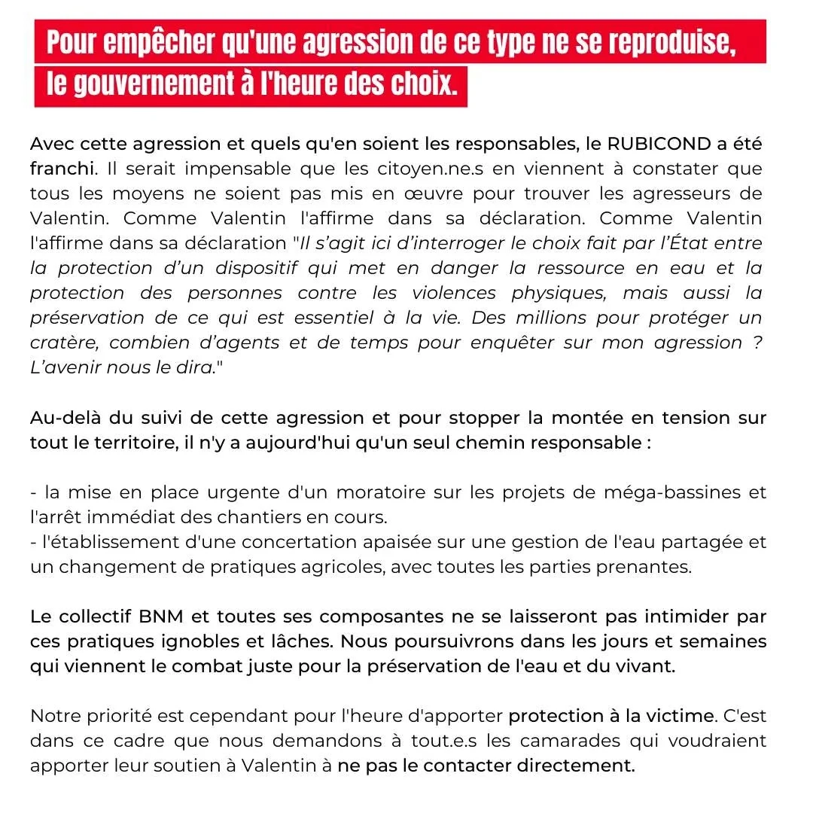
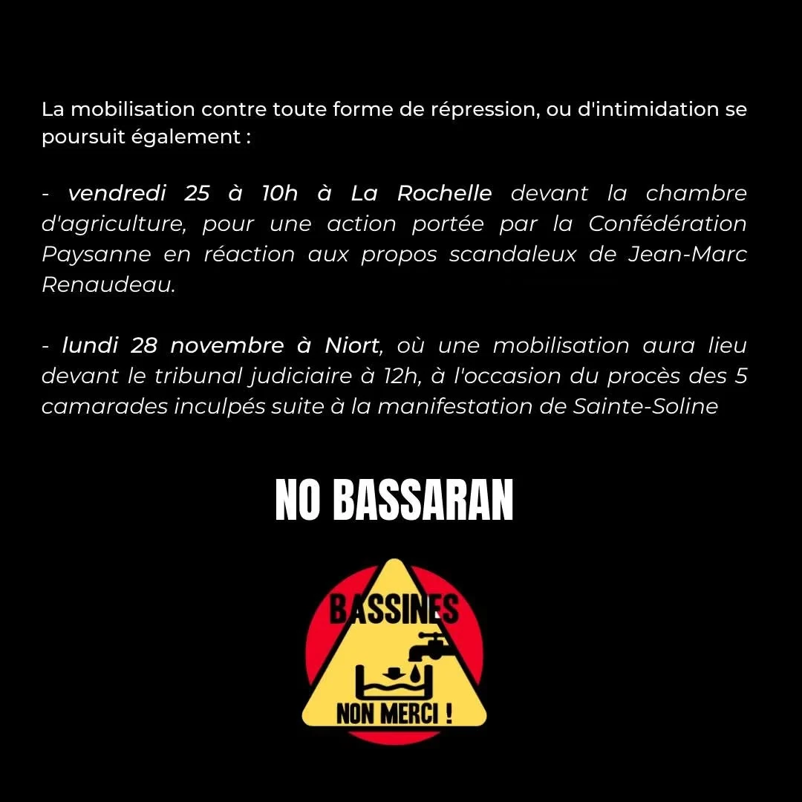

Publication relayée par le PCF 79
Bassines Non Merci réagit à l’agression signalée d’un militant
Date de mise à jour indiquée par Facebook · 25 novembre 2022
Extrait de la publication d’origine
EXPLICATIONS ET REACTIONS suite à l'agression brutale d'un jeune militant anti bassines devant son domicile
L'agression, les blessures et la tentative d'intrusion dans son domicile.
Ce jeudi 24 Novembre, notre camarade Valentin a déposé plainte à la gendarmerie de Melle (79), accompagné par son avocate suite à l'agression dont il a été victime vendredi 18 Novembre à son domicile.
De retour devant son domicile après son footing quotidien, Valentin a surpris un individu qui tentait de forcer une des portes de son domicile pour vraisemblablement s'y introduire.
Apostrophant cet individu, Valentin a été violemment frappé au visage par un deuxième homme, tapi dans l'ombre. Mis au sol, Valentin a alors été roué de coups sur tout le corps et insulté en des termes qui ne laissent aucune ambiguité quant aux motivations réelles de ses agresseurs "Enculé d'écolo de merde", "On te pisse dessus", "Il est beau l'antibassine".
Cette agression a nécessité l'hospitalisation de Valentin à plusieurs reprises, débouchant sur une Incapacité Totale de Travail (ITT) de 15 jours. Il présente en effet plusieurs blessures graves : fractures et/ou fêlures des côtes et du nez sur le flanc gauche, entorse cervicale et entorse de la cheville gauche, multiples contusions, plaies au visage et sur l'ensemble du corps. Cette ITT pourrait être réévaluée au vu des incapacités plus longues causées par le choc psychologique; et le temps nécessaire à se remettre des entorses et fêlures sur les diverses parties du corps avant de pouvoir retrouver une activité normale.
Pourquoi Valentin était ciblé ?
Le caractère politique de cette agression ne fait aucun doute. Voici ce que nous dit Valentin sur le caractère public de son engagement et sur ce qui a pu motiver ses agresseurs : "Très attaché à la protection de mon territoire, le Marais Poitevin, depuis très jeune, j’ai toujours entretenu une relation privilégiée avec mon milieu de vie, imaginant un temps devenir guide de pêche. C’est tout naturellement que j’ai rejoint ces derniers mois le collectif Bassines Non Merci et que j’ai rendu public mon investissement dans ce combat vital.
En amont de la manifestation, j’avais diffusé, le 22 Octobre, un appel à rejoindre la manifestation de Sainte Soline les 29 et 30 octobre sur mon compte Instagram qui a été assez largement diffusé (https://www.instagram.com/p/CkJCp7WDvKz/). Le jour de la manifestation, j’ai été horrifié par la quantité de munitions en tout genre utilisées par les forces de l’ordre et par les blessures qu’elles occasionnaient. Je me suis investi dans le soutien des plus fragiles et des plus impactés. Le lendemain et les jours suivants, j’ai participé à des opérations de ramassage et d’inventaires des centaines de bombes de désencerclement, assourdissantes, lacrymogènes et LBD laissées éparses dans les champs. Certaines grenades étant encore susceptibles d'exploser et de blesser.
Les dégâts constatés par l’impact des bombes de désencerclements m’ont amené à la conclusion que ce jour là, les forces de l’ordre auraient pu, comme lors de la mort de Rémy Fraisse à Sivens, commettre l’irréparable. J’ai fait part à visage découvert de ces réflexions et constats sur les réseaux sociaux."
Il se trouve que Valentin est aussi le neveu d'un des porte parole du Collectif Bassines Non Merci, Julien Le Guet, menacé lui-même à différentes reprises, ce qui l'expose d'autant plus.
Les faits précédents - La lourde responsabilité du gouvernement et des promoteurs des bassines.
De nombreuses questions demeurent quant à l'identité, aux mobiles précis, aux complicités ou aux commanditaires des agresseurs. Nous ne pouvons qu'attendre à ce titre des réactions et procédures rapides après le dépôt de plainte de cet après-midi. Mais il nous faut mettre en avant dès aujourd'hui un ensemble de faits et d'acteurs qui ont pu cautionner et générer cette agression.
Voilà en effet ce que suscite le sentiment d'impunité qui peut naître - au vu des partis pris affirmés des pouvoirs publics et des forces de l'ordre - chez les partisans des bassines et leurs complices, qu'ils soient exploitants, représentants des entreprises de travaux publics... Depuis plusieurs années, les membres du collectif Bassines Non Merci avaient déposé à de nombreuses reprises des plaintes pour mise en danger de la vie d'autrui et menaces de mort
https://france3-regions.francetvinfo.fr/.../face-face...
[lien retiré]
Ces plaintes étaient restées lettre morte. A contrario des gendarmes du territoire avaient pu récemment présenter un diaporama des membres du collectif Bassine Non Merci devant une assemblée des irrigants du pays mellois. Et tout récemment encore, le président de la chambre d'agriculture interdépartementale, Jean-Marc Renaudeau, justifiait par des propos scandaleux les menaces de mort contre le porte-parole de la Confédération paysanne Benoit Jaunet.
https://www.ouest-france.fr/.../le-president-de-la...
Cette agression est par ailleurs emblématique de la montée des tensions sur un territoire lorsqu'un gouvernement tente d'imposer par tous les moyens, y compris répressifs et militaires, un projet contesté depuis des années par une large part de la population, habitant.es, paysan.nes, naturalistes, pêcheurs, scientifiques... Les projets de bassines et le modèle agricole industriel qu'ils maintiennent à bout de souffle sont déjà condamnés par l'accélération des bouleversements climatiques. Pourtant, d'autres solutions existent et peuvent garantir la souveraineté alimentaire de la population et la préservation de la ressource en eau, tant en quantité qu'en qualité. Mais le gouvernement a choisi de ne pas en tenir compte et de passer en force, quitte à créer un climat explosif.
Cette agression témoigne de la violence qu'autorise et cautionne les prises de paroles honteuses d'un ministre de l'intérieur, Darmanin qui choisit sciemment de diaboliser des milliers de citoyen.ne.s mobilisé.es pour la défense d'un bien commun et d'éviter ainsi de parler du fond du dossier.
Cette agression est le pendant apparemment "civil" d'une criminalisation croissante des militant.e.s écologistes, que le gouvernement invite à punir sévèrement. Une circulaire "d"exception", signée par le garde des sceaux Dupond-Moretti, à été adressée aux procureurs de France pour les enjoindre à punir de manière expéditive et exemplaire tou.te.s les citoyen.ne.s qui osent s'en prendre à des "projets d'aménagements du territoire" (pour ne pas dire explicitement mégabassines). https://www.revolutionpermanente.fr/Le-ministere-de-la...
Nous rappelons pour notre part que nos actions de désobéissance n'ont jamais pris pour cible l'intégrité physique des personnes, nous nous sommes toujours fermement opposés à toute initiative à l'encontre des bénéficiaires de ces projets et de leurs soutiens. Nos actes collectifs de désarmement des équipements sont motivés par « l’état de nécessité », car ceux-ci font peser un danger imminent sur l'ensemble de la population et du vivant. À l'inverse, depuis de nombreuses années, les menaces physiques sont le mode d'action privilégié par le camp des pro-bassines afin de faire pression sur les membres du Collectif Bassines Non Merci. Elles trouvent leur débouché aujourd'hui dans l'attaque envers Valentin.
Pour empêcher qu'une agression de ce type ne se reproduise, le gouvernement à l'heure des choix.
Avec cette agression et quels qu'en soient les responsables, le RUBICOND a été franchi. La situation est grave et le risque d'embrasement réel. Il serait impensable que les citoyen.ne.s en viennent à constater que tous les moyens ne soient pas mis en oeuvre pour trouver les agresseurs de Valentin. Comme Valentin l'affirme dans sa déclaration, "Il s’agit ici d’interroger le choix fait par l’État entre la protection d’un dispositif qui met en danger la ressource en eau d'un côté et la protection des personnes contre les violences physiques, mais aussi la préservation de ce qui est essentiel à la vie de l'autre. Des millions pour protéger un cratère, combien d’agents et de temps pour enquêter sur mon agression ? L’avenir nous le dira."
Au-delà du suivi de cette agression et pour que la paix revienne sur tout le territoire, il n'y a aujourd'hui qu'un seul chemin responsable :
la mise en place urgente d'un moratoire sur les projets de méga-bassines et l'arrêt immédiat des chantiers en cours.
l'établissement d'une concertation apaisée sur une gestion de l'eau partagée et un changement de pratiques agricoles, avec toutes les parties prenantes.
Le collectif BNM et toutes ses composantes ne se laisseront pas intimider par ces pratiques ignobles et lâches. Nous poursuivrons dans les jours et semaines qui viennent le combat juste pour la préservation de l'eau et du vivant.
Notre priorité est cependant pour l'heure d'apporter protection à la victime. C'est dans ce cadre que nous demandons à tout.e.s les camarades qui voudraient apporter leur soutien à Valentin à ne pas le contacter directement.
La mobilisation contre toute forme de répression, ou d'intimidation se poursuit également :
vendredi 25 à 10h00 devant la chambre d'agriculture de La Rochelle, pour une action portée par la Confédération Paysanne en réaction aux propos scandaleux de Jean-Marc Renaudeau.
lundi 28 novembre à Niort, où une mobilisation aura lieu devant le tribunal judiciaire à 12h, à l'occasion du procès des 5 camarades inculpés suite à la manifestation de Sainte-Soline https://www.facebook.com/events/455495950066328
No Bassaran !
Repères éditoriaux
Le collectif publie sa réaction et sept visuels. Les déclarations et le récit des faits sont ceux de la publication d’origine.







Sources
Bassines Non Merci · publication relayée par le PCF 79 · bibliothèque Facebook · AR-0002-FB-01807
À lire aussi · « Pas une bassine de plus ». La vidéo et le texte de l’appel